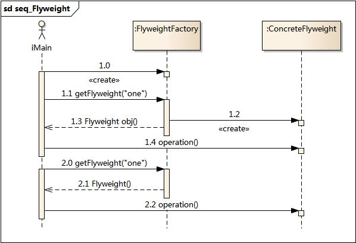

5. 享元模式¶
5.1. 模式动机¶
面向对象技术可以很好地解决一些灵活性或可扩展性问题，但在很多情况下需要在系统中增加类和对象的个数。当对象数量太多时，将导致运行代价过高，带来性能下降等问题。
享元模式正是为解决这一类问题而诞生的。享元模式通过共享技术实现相同或相似对象的重用。
在享元模式中可以共享的相同内容称为内部状态(IntrinsicState)，而那些需要外部环境来设置的不能共享的内容称为外部状态(Extrinsic State)，由于区分了内部状态和外部状态，因此可以通过设置不同的外部状态使得相同的对象可以具有一些不同的特征，而相同的内部状态是可以共享的。
在享元模式中通常会出现工厂模式，需要创建一个享元工厂来负责维护一个享元池(Flyweight Pool)用于存储具有相同内部状态的享元对象。
在享元模式中共享的是享元对象的内部状态，外部状态需要通过环境来设置。在实际使用中，能够共享的内部状态是有限的，因此享元对象一般都设计为较小的对象，它所包含的内部状态较少，这种对象也称为细粒度对象。享元模式的目的就是使用共享技术来实现大量细粒度对象的复用。
5.2. 模式定义¶
享元模式(Flyweight Pattern)：运用共享技术有效地支持大量细粒度对象的复用。系统只使用少量的对象，而这些对象都很相似，状态变化很小，可以实现对象的多次复用。由于享元模式要求能够共享的对象必须是细粒度对象，因此它又称为轻量级模式，它是一种对象结构型模式。
5.3. 模式结构¶
享元模式包含如下角色：
Flyweight: 抽象享元类
ConcreteFlyweight: 具体享元类
UnsharedConcreteFlyweight: 非共享具体享元类
FlyweightFactory: 享元工厂类

5.4. 时序图¶
5.5. 代码分析¶
1#include <iostream>
2#include "ConcreteFlyweight.h"
3#include "FlyweightFactory.h"
4#include "Flyweight.h"
5using namespace std;
6
7int main(int argc, char *argv[])
8{
9 FlyweightFactory factory;
10 Flyweight * fw = factory.getFlyweight("one");
11 fw->operation();
12
13 Flyweight * fw2 = factory.getFlyweight("two");
14 fw2->operation();
15 //aready exist in pool
16 Flyweight * fw3 = factory.getFlyweight("one");
17 fw3->operation();
18 return 0;
19}
1///////////////////////////////////////////////////////////
2// FlyweightFactory.cpp
3// Implementation of the Class FlyweightFactory
4// Created on: 06-十月-2014 20:10:42
5// Original author: colin
6///////////////////////////////////////////////////////////
7
8#include "FlyweightFactory.h"
9#include "ConcreteFlyweight.h"
10#include <iostream>
11using namespace std;
12
13FlyweightFactory::FlyweightFactory(){
14
15}
16
17
18
19FlyweightFactory::~FlyweightFactory(){
20
21}
22
23Flyweight* FlyweightFactory::getFlyweight(string str){
24 map<string,Flyweight*>::iterator itr = m_mpFlyweight.find(str);
25 if(itr == m_mpFlyweight.end())
26 {
27 Flyweight * fw = new ConcreteFlyweight(str);
28 m_mpFlyweight.insert(make_pair(str,fw));
29 return fw;
30 }
31 else
32 {
33 cout << "aready in the pool,use the exist one:" << endl;
34 return itr->second;
35 }
36}
1///////////////////////////////////////////////////////////
2// ConcreteFlyweight.h
3// Implementation of the Class ConcreteFlyweight
4// Created on: 06-十月-2014 20:10:42
5// Original author: colin
6///////////////////////////////////////////////////////////
7
8#if !defined(EA_C0AF438E_96E4_46f1_ADEC_308EF16E11D1__INCLUDED_)
9#define EA_C0AF438E_96E4_46f1_ADEC_308EF16E11D1__INCLUDED_
10
11#include "Flyweight.h"
12#include <string>
13using namespace std;
14
15class ConcreteFlyweight : public Flyweight
16{
17
18public:
19 ConcreteFlyweight(string str);
20 virtual ~ConcreteFlyweight();
21
22 virtual void operation();
23
24private:
25 string intrinsicState;
26
27};
28#endif // !defined(EA_C0AF438E_96E4_46f1_ADEC_308EF16E11D1__INCLUDED_)
1///////////////////////////////////////////////////////////
2// ConcreteFlyweight.cpp
3// Implementation of the Class ConcreteFlyweight
4// Created on: 06-十月-2014 20:10:42
5// Original author: colin
6///////////////////////////////////////////////////////////
7
8#include "ConcreteFlyweight.h"
9#include <iostream>
10using namespace std;
11
12
13ConcreteFlyweight::ConcreteFlyweight(string str){
14 intrinsicState = str;
15}
16
17ConcreteFlyweight::~ConcreteFlyweight(){
18
19}
20
21void ConcreteFlyweight::operation(){
22 cout << "Flyweight[" << intrinsicState << "] do operation." << endl;
23}
运行结果：

5.6. 模式分析¶
享元模式是一个考虑系统性能的设计模式，通过使用享元模式可以节约内存空间，提高系统的性能。
享元模式的核心在于享元工厂类，享元工厂类的作用在于提供一个用于存储享元对象的享元池，用户需要对象时，首先从享元池中获取，如果享元池中不存在，则创建一个新的享元对象返回给用户，并在享元池中保存该新增对象。
享元模式以共享的方式高效地支持大量的细粒度对象，享元对象能做到共享的关键是区分内部状态(Internal State)和外部状态(External State)。
内部状态是存储在享元对象内部并且不会随环境改变而改变的状态，因此内部状态可以共享。
外部状态是随环境改变而改变的、不可以共享的状态。享元对象的外部状态必须由客户端保存，并在享元对象被创建之后，在需要使用的时候再传入到享元对象内部。一个外部状态与另一个外部状态之间是相互独立的。
5.7. 实例¶
5.8. 优点¶
享元模式的优点
享元模式的优点在于它可以极大减少内存中对象的数量，使得相同对象或相似对象在内存中只保存一份。
享元模式的外部状态相对独立，而且不会影响其内部状态，从而使得享元对象可以在不同的环境中被共享。
5.9. 缺点¶
享元模式的缺点
享元模式使得系统更加复杂，需要分离出内部状态和外部状态，这使得程序的逻辑复杂化。
为了使对象可以共享，享元模式需要将享元对象的状态外部化，而读取外部状态使得运行时间变长。
5.10. 适用环境¶
在以下情况下可以使用享元模式：
一个系统有大量相同或者相似的对象，由于这类对象的大量使用，造成内存的大量耗费。
对象的大部分状态都可以外部化，可以将这些外部状态传入对象中。
使用享元模式需要维护一个存储享元对象的享元池，而这需要耗费资源，因此，应当在多次重复使用享元对象时才值得使用享元模式。
5.11. 模式应用¶
享元模式在编辑器软件中大量使用，如在一个文档中多次出现相同的图片，则只需要创建一个图片对象，通过在应用程序中设置该图片出现的位置，可以实现该图片在不同地方多次重复显示。
5.12. 模式扩展¶
单纯享元模式和复合享元模式
单纯享元模式：在单纯享元模式中，所有的享元对象都是可以共享的，即所有抽象享元类的子类都可共享，不存在非共享具体享元类。
复合享元模式：将一些单纯享元使用组合模式加以组合，可以形成复合享元对象，这样的复合享元对象本身不能共享，但是它们可以分解成单纯享元对象，而后者则可以共享。
享元模式与其他模式的联用
在享元模式的享元工厂类中通常提供一个静态的工厂方法用于返回享元对象，使用简单工厂模式来生成享元对象。
在一个系统中，通常只有唯一一个享元工厂，因此享元工厂类可以使用单例模式进行设计。
享元模式可以结合组合模式形成复合享元模式，统一对享元对象设置外部状态。
5.13. 总结¶
享元模式运用共享技术有效地支持大量细粒度对象的复用。系统只使用少量的对象，而这些对象都很相似，状态变化很小，可以实现对象的多次复用，它是一种对象结构型模式。
享元模式包含四个角色：抽象享元类声明一个接口，通过它可以接受并作用于外部状态；具体享元类实现了抽象享元接口，其实例称为享元对象；非共享具体享元是不能被共享的抽象享元类的子类；享元工厂类用于创建并管理享元对象，它针对抽象享元类编程，将各种类型的具体享元对象存储在一个享元池中。
享元模式以共享的方式高效地支持大量的细粒度对象，享元对象能做到共享的关键是区分内部状态和外部状态。其中内部状态是存储在享元对象内部并且不会随环境改变而改变的状态，因此内部状态可以共享；外部状态是随环境改变而改变的、不可以共享的状态。
享元模式主要优点在于它可以极大减少内存中对象的数量，使得相同对象或相似对象在内存中只保存一份；其缺点是使得系统更加复杂，并且需要将享元对象的状态外部化，而读取外部状态使得运行时间变长。
享元模式适用情况包括：一个系统有大量相同或者相似的对象，由于这类对象的大量使用，造成内存的大量耗费；对象的大部分状态都可以外部化，可以将这些外部状态传入对象中；多次重复使用享元对象。